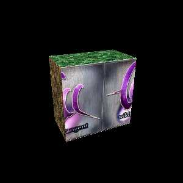

Animated Texture Test
What You Should See:
This test animates an image across a square surface. It should be perfectly aligned from top to bottom as it moves from right to left, then left to right. This tests the texture coordinate system. An example of what you should see is shown below.
Step 1:
